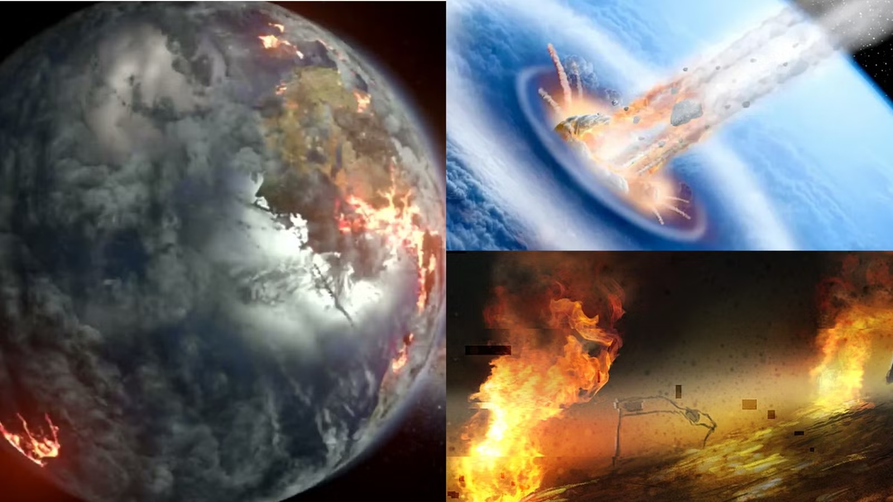
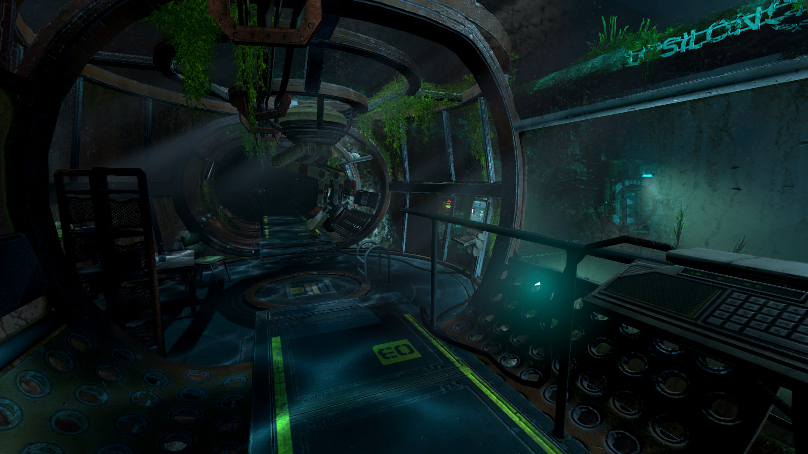
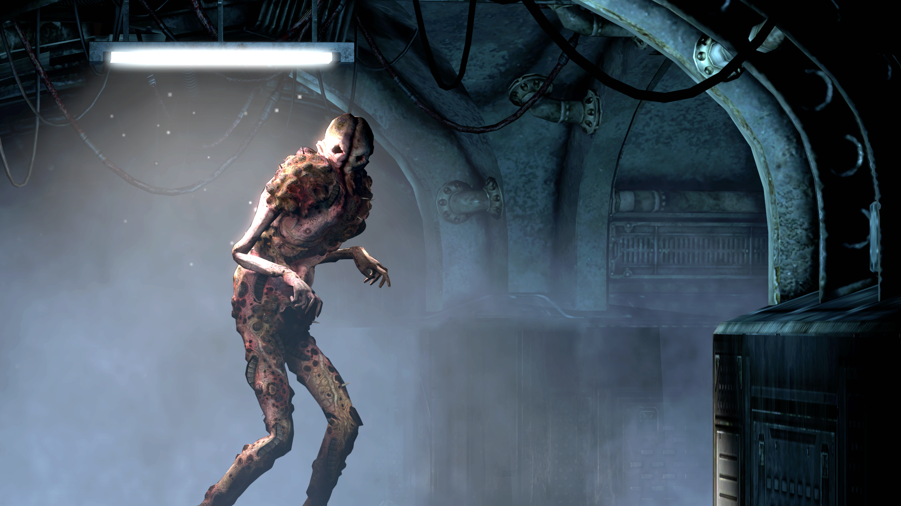

Synopsis
In SOMA, players follow Simon Jarret, a man who undergoes an experimental brain scan in 2015—only to awaken a century later in the dilapidated underwater facility of PATHOS-II. Humanity has perished after a catastrophic event on the surface, and what remains beneath the ocean is a decaying world run by the WAU, an AI struggling to “preserve” life through grotesque means.
As Simon searches for answers, he encounters Catherine Chun, a scientist whose digital consciousness guides him through the facility. Together, they work to complete the ARK project—a final attempt to save humanity by uploading the last surviving minds into a simulated world.
What begins as a mission for survival quickly becomes an exploration of identity, consciousness, and the blurred line between life and existence. SOMA isn't just a horror story—it's a chilling reflection on what it truly means to be human.
